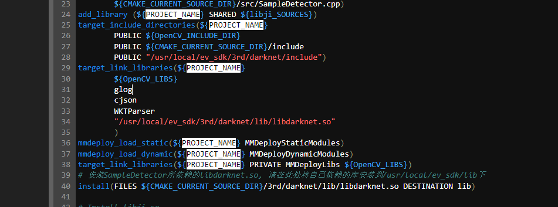

- 问题1
-

-
第38行，由于属性不统一导致错误
-
解释：
Cmake中，用target_include_directories,target_link_libraries时，模式要一致。要么都加上PUBLIC/PRIVATE的属性。要么都不加加上是cmake比较推荐的,mmdeploy中都是加了的.
-
极视的 cmakelistfile.txt 示例： ``` #sdk 4.0 cmake_minimum_required(VERSION 3.5) project(ji)
set(CMAKE_CXX_STANDARD 11) set(CMAKE_INSTALL_PREFIX "/usr/local/ev_sdk") set(CMAKE_INSTALL_RPATH "${CMAKE_INSTALL_PREFIX}/lib") set(MMDeploy_DIR /project/ev_sdk/3rd/mmdeploy/lib/cmake/MMDeploy)
使用pkg-config查找必要的依赖包
find_package(OpenCV REQUIRED) find_library(glog REQUIRED) find_package(MMDeploy REQUIRED) set(ENV{PKG_CONFIG_PATH} "ENV{PKG_CONFIG_PATH}") find_package(PkgConfig REQUIRED)
add_subdirectory(${CMAKE_CURRENT_SOURCE_DIR}/3rd/cJSON) add_subdirectory(${CMAKE_CURRENT_SOURCE_DIR}/3rd/wkt_parser)
add_subdirectory(${CMAKE_CURRENT_SOURCE_DIR}/3rd/mmdeploy/example)
set(CMAKE_INSTALL_RPATH "${CMAKE_INSTALL_RPATH}:/usr/local/ev_sdk/lib")
编译libji.so
list(APPEND libji_SOURCES ${CMAKE_CURRENT_SOURCE_DIR}/src/ji.cpp ${CMAKE_CURRENT_SOURCE_DIR}/src/SampleDetector.cpp) add_library (${PROJECT_NAME} SHARED ${libji_SOURCES}) target_include_directories(${PROJECT_NAME}
PUBLIC ${OpenCV_INCLUDE_DIR} PUBLIC ${CMAKE_CURRENT_SOURCE_DIR}/include PUBLIC "/usr/local/ev_sdk/3rd/darknet/include") target_link_libraries(${PROJECT_NAME} ${OpenCV_LIBS} glog cjson WKTParser "/usr/local/ev_sdk/3rd/darknet/lib/libdarknet.so" ) mmdeploy_load_static(${PROJECT_NAME} MMDeployStaticModules) mmdeploy_load_dynamic(${PROJECT_NAME} MMDeployDynamicModules) target_link_libraries(${PROJECT_NAME} MMDeployLibs ${OpenCV_LIBS})安装SampleDetector所依赖的libdarknet.so, 请在此处将自己依赖的库安装到/usr/local/ev_sdk/lib下
install(FILES ${CMAKE_CURRENT_SOURCE_DIR}/3rd/darknet/lib/libdarknet.so DESTINATION lib)
Install libji.so
install(TARGETS ${PROJECT_NAME} DESTINATION lib)
--- END EV_SDK DEPENDENCIES ---
```
-
问题2： 当出现找不到某个.so文件的解决方法：
find / -name '*.so ' 去找一下这个文件是否存在，如果存在但是显示找不到，则设置**library_path**环境 变量 - 编译的一般流程：
mkdir build && cd build cmake .. (这边指的是外部要有camke*.txt) 相当与link的操作，去寻找所需要的所有依赖 make install